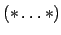

There are two forms of comments in Cool. Any characters between two dashes ``-'' and the next newline (or EOF, if there is no next newline) are treated as comments. Comments may also be written by enclosing text in . The latter form of comment may be nested but may not contain EOF. Comments cannot cross file boundaries.